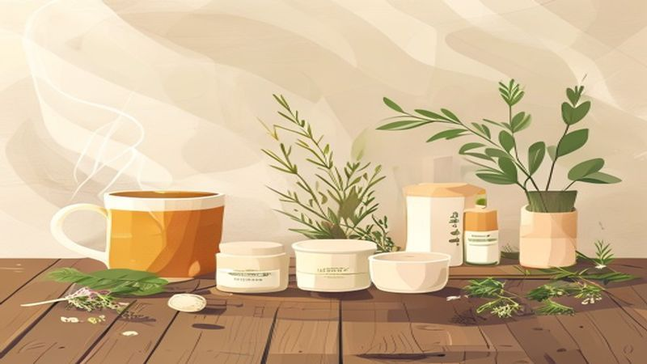

冷えと疲れを解きほぐす。100%天然生薬で始める、夜の「温活・養生」セルフケア
2026.06.03

毎日を一生懸命に過ごしていると、いつの間にか肩に力が入り、呼吸が浅くなっていることに気づく瞬間はありませんか？特に季節の変わり目や、寒さを感じる季節は、知らず知らずのうちに体が冷え、心までこわばってしまいがちです。
セルフケアブランド「fucuu（フクウ）」が大切にしているのは、忙しい日々の中でほんの少し立ち止まり、植物のちからを借りて「わたしに戻る」時間を持つこと。今回は、東洋の知恵である「養生（ようじょう）」と「温活」を取り入れ、心と体を芯からぽかぽかと温める夜のセルフケア習慣をご紹介します。
1. なぜ「温活」と「養生」が今、必要なのか？
「養生」と聞くと、少し難しいことのように感じるかもしれません。しかし、養生とは本来、自分の体に耳を傾け、いたわり、生命力を養うという、とてもシンプルで優しいセルフケアのことです。
冷えは万病のもと。心と体の「余白」を作るために
現代人は、冷暖房による寒暖差やデスクワーク、PC・スマートフォンの見すぎなど、常に緊張状態（交感神経が優位な状態）に置かれています。体が緊張すると血管が収縮して血行が滞り、手足の冷えや肩こり、眠りの質の低下といった「なんとなくの不調」を引き起こしやすくなります。
この冷えを放置せず、意識的に温めることで血の巡りを良くし、心身をリラックスモード（副交感神経優位）へと切り替える。これこそが温活の第一歩であり、現代の養生です。体を温めることは、忙しさで凝り固まった心に「余白」を作ることでもあるのです。
2. 生薬の力で芯から温まる、お風呂時間の過ごし方
一日の中で、最も手軽に、そして効果的に温活を行えるのが「お風呂」の時間です。シャワーだけで済ませず、お湯にゆったりと浸かることで、全身の巡りが劇的に変わります。
100%天然生薬がもたらす、特別な温もり
fucuuがおすすめするのは、化学添加物を一切使わない100%無添加の天然生薬入浴剤を使ったお風呂です。古来より人々を癒してきた生薬（植物の根、葉、皮など）は、大地のエネルギーをたっぷりと蓄えています。
お湯に生薬パックを浮かべると、じんわりとお湯が色づき、大地の優しい香りが湯気にのって広がります。生薬の成分が温浴効果を高め、お湯の熱を体の芯まで届けて持続させてくれるため、お風呂上がりも湯冷めしにくく、ぽかぽかとした温かさが長く続きます。

じっくり汗をかく、生薬風呂の入り方
温活効果を最大限に高めるための、おすすめの入浴法をご紹介します。
Tips：生薬風呂で心身をゆるめる入浴法
1. お湯の温度は38℃〜40℃のややぬるめに設定します。
2. 入浴前にコップ1杯の白湯かお水を飲み、水分補給を。
3. 生薬パックをお湯の中で優しく揉みほぐし、植物の成分を溶け出させます。
4. 15分〜20分、みぞおちまで浸かる半身浴、または肩までゆっくり浸かる全身浴を行います。
5. 湯気と一緒に立ち上る生薬の香りを、深呼吸しながら胸いっぱいに吸い込んでください。
3. 心を満たす、お風呂上がりの「わたしに戻る」セルフケア
お風呂で十分に体が温まったら、その温もりを逃がさないように、ベッドに入るまでの時間をどう過ごすかがポイントになります。ここからは、五感を満たし、幸福感（フクフクとした気持ち）で満たされるためのセルフケアをご紹介します。

国産アロマの香りで呼吸を整える
お風呂上がりは、お肌の水分が失われやすいデリケートな時間。このタイミングで、100%天然の国産アロマを使用したオイルやミストを取り入れましょう。日本の豊かな森で育まれた樹木（ヒノキやクロモジなど）や、和柑橘（ユズや伊予柑など）の香りは、私たちのDNAに深く染み渡るような、どこか懐かしく、ほっとする安らぎを与えてくれます。
手のひらにオイルを広げ、まずはその香りを深く吸い込んでみてください。自然と呼吸が深くなり、頭の中でぐるぐると回っていた考え事が静かに消えていくのを感じられるはずです。
お風呂上がりから寝る前までの簡単養生習慣
お風呂上がりの体がポカポカしているうちに、軽いストレッチを行いましょう。ふくらはぎや足首、股関節など、下半身を優しくほぐすことで、さらに血流が促されます。また、冷たい飲み物は避け、白湯やノンカフェインのハーブティーを一口ずつゆっくりと味わいましょう。胃腸を内側から温めることで、自律神経が整い、自然な眠りへと導かれます。
まとめ：フクフクとした幸福感に包まれる、明日のための夜習慣
「fucuu」の名前には、心と体が満たされ、思わず「フふっ」と笑顔がこぼれるような、幸せな空気感（フクフク）を届けたいという想いが込められています。
温活や養生は、決して義務やルールではありません。がんばった自分に「お疲れさま」を伝えるための、愛おしい儀式です。100%天然の生薬と、優しく寄り添う国産アロマのちからを借りて、今夜はスマートフォンを少し遠くに置き、自分だけの「温かい時間」を過ごしてみませんか？
しっかりと温まり、満たされた心と体は、きっと明日を軽やかに、自分らしく生きるエネルギーになってくれるはずです。
fucuuの生薬入浴剤・国産アロマは、BASEオンラインショップでご購入いただけます。
BASEで購入する